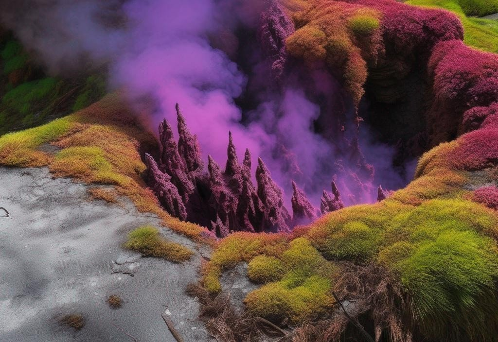
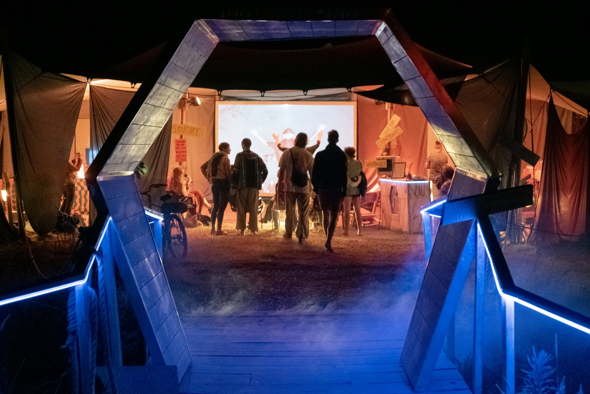
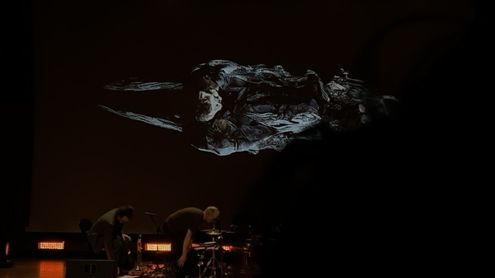

Latent States explores the hidden worlds within us—through art, science, and the spaces where they meet. We build installations, run experiments, and stage encounters between humans and machines at festivals, galleries, and warehouses. The question at the center: what is it like to experience?